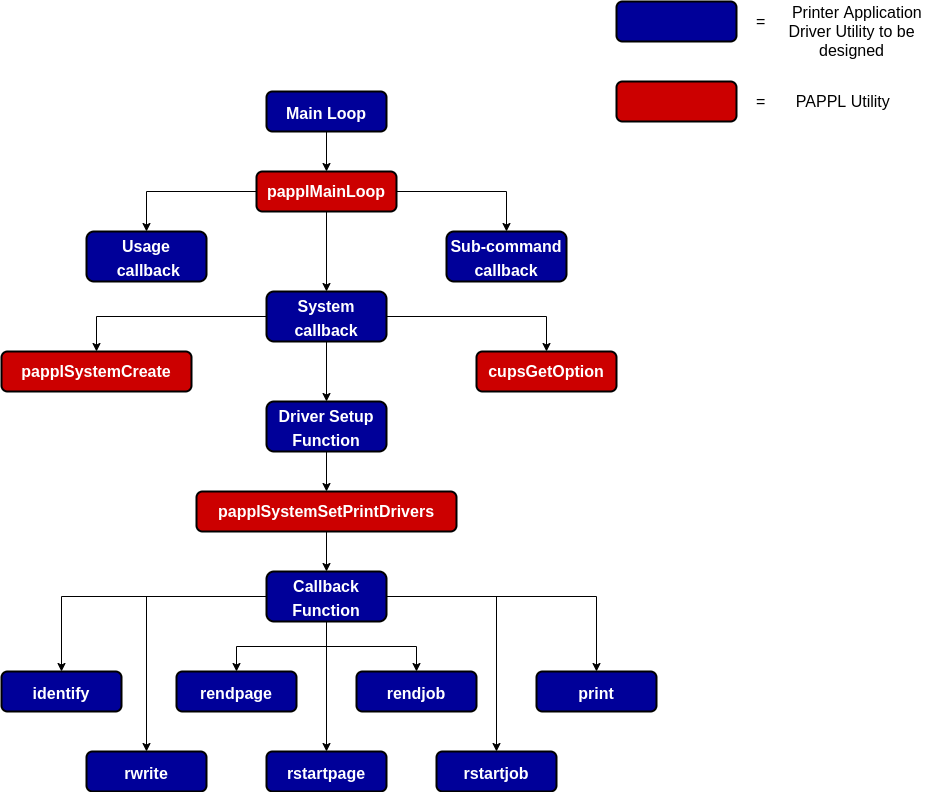
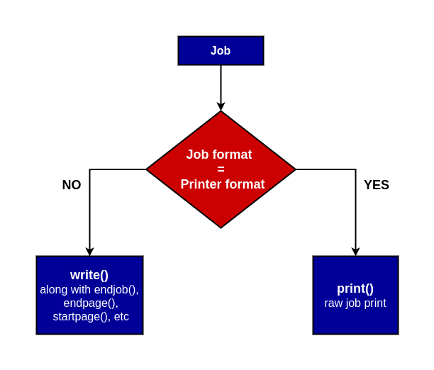

Designing Printer Drivers
This document contains a complete tutorial as well as information for manufacturers with examples for designing printer drivers. If you are looking for information regarding the use of printer drivers, kindly refer to User Manual
Introduction
A driver is a code or data specific to a certain model or group of hardware devices, needed to make the hardware work with the hardware-model-independent code of the operating system. Printing in Linux has moved towards Driverless Printing, which means there is no need for any hardware-model-specific code or data. However, there are some problems with the current framework. For example, some printers(especially the old ones) that cannot handle IPP requests are devoid of driverless printing capability. Printer Applications help to address these issues. Kindly refer Printer Applications - A new way to print in Linux to learn more about Printer Applications, its working and benefits.
For Designing the Printer Application Driver, it would be a lot of re-inventing the wheel if everyone who wants to create a printer driver has to implement all things from scratch. Therefore Michael Sweet has developed PAPPL, a library that provides all the common functionality which is required in every Printer Application.
The flowchart below mentions the components of the driver that needs to be designed by you (boxes in blue color), along with the PAPPL utilities (boxes in red color) that would be used by your designed components.

The following tutorial helps you to understand how to design each component and integrate the PAPPL Utilities to reduce your work.
Components for PAPPL-based Printer Driver
-
papplMainLoop
papplMainLoop is the main entry point for the application. It runs a standard main loop with a system callback. Also allows the printer application to define its own usage callback and have an application specific subcommand.
The
papplMainloopfunction runs until all processing for the current sub-command is complete, returning the exit status for the program.int // O - Exit status papplMainloop( int argc, // I - Number of command line arguments char *argv[], // I - Command line arguments const char *version, // I - Version number const char *footer_html, // I - Footer HTML or `NULL` for none int num_drivers, // I - Number of drivers pappl_pr_driver_t *drivers, // I - Drivers pappl_pr_driver_cb_t driver_cb, // I - Driver callback pappl_ml_autoadd_cb_t autoadd_cb, // I - Auto-add callback or `NULL` for none const char *subcmd_name, // I - Sub-command name or `NULL` for none pappl_ml_subcmd_cb_t subcmd_cb, // I - Sub-command callback or `NULL` for none pappl_ml_system_cb_t system_cb, // I - System callback or `NULL` for default pappl_ml_usage_cb_t usage_cb, // I - Usage callback or `NULL` for default void *data // I - Context pointer )Before looking at the arguments, you must be aware that there are two ways to configure the papplMainloop:
-
Use system callback argument
The system is an object of type
pappl_system_tthat manages client and device connections, listeners, the log, printers, and resources. In addition, it provides an optional embedded web interface, raw socket printing, and USB printer gadget (Linux only).The system callback argument specifies a function that will create a new system, i.e. a
pappl_system_tobject. You can use the callback function to customisably configure system properties using the PAPPL System Utilities. This includes configuring Footer HTML on your web interface and setting up drivers.You can refer designing system callback guidelines for retrieving more information about the System Callback function.
-
Without system callback function
PAPPL allows the manufacture to refrain from the hardships of designing a system callback to create a system. You can specify the system callback as
NULLand pass on only a few arguments:If the “system_cb” argument is passed as
NULL, PAPPL automatically sets up the list of drivers passed as “drivers” arguments and add the Footer HTML for the web interface (in “footer” argument is notNULL). A default system object is created for the printer application, which supports multiple printers and a web interface.
The
argcandargvarguments forpapplMainLoopare those provided to themainfunction. Other arguments are given below.-
Version number
This argument is simply a string literal, denoting the numeric version of the printer driver that conforms to semantic versioning guidelines with up to four numbers, for example “1.2.3.4”
Examples of valid version number are “1.0”, “2.1”, etc.
-
Footer HTML
The “footer_html” argument can be provided to override the default footer text that appears at the bottom of the web interface.
As mentioned above, you can pass this argument as
NULLand add the footer in system callback function. If system callback and “footer_html” argument both areNULLthe default is used. -
Number of drivers
The “num_drivers” argument specifies the number of drivers for printers. Specify
0if the drivers are configured in the system callback. -
Drivers
The drivers list is a collection of names, descriptions, IEEE-1284 device IDs, and extension pointers. You can pass this argument as
NULLif the drivers are configured in the system callback.A valid example for HP DeskJet, HP LaserJet, and a generic PCL driver, looks like this:
static pappl_pr_driver_t pcl_drivers[] =// Driver information { /* name */ /* description */ /* device ID */ /* extension */ { "hp_deskjet", "HP Deskjet", NULL, NULL }, { "hp_generic", "Generic PCL", "CMD:PCL;", NULL }, { "hp_laserjet", "HP LaserJet", NULL, NULL } }; -
Driver Callback
The driver callback is responsible for providing the data associated with each driver and is called when the system is creating a new printer. It also responsible for letting the application know what functions to call when performing job functions like starting a job, starting a page, writing a line, ending a page, ending a job, printing a raw job, etc.
You can pass this argument as
NULLif the drivers are configured in the system callback. Else, for designing the driver callback function, refer to the design driver callback guidelines. -
Autoadd Callback
The “autoadd_cb” argument specifies a callback for automatically adding new printers with the “autoadd” sub-command. It tells PAPPL which driver to use for the printers it finds.
-
Sub-command name
This argument is a string literal that denotes the additional custom sub-command supported by your printer driver. By default, PAPPL helps each driver to support the following sub-commands:
- add
- cancel
- default
- delete
- devices
- drivers
- jobs
- modify
- options
- printers
- server
- shutdown
- status
- submit
If your printer doesn’t support any additional custom sub-command, you may specify the argument as
NULL. -
Sub-command Callback
This callback argument is the function that is to be executed when the sub-command(other than the default sub-commands) is specified.
Since each driver is not bound to support additional sub-command, one may specify this argument as
NULLin case the printer driver does not support any additional sub-command.If you wish to support additional sub-command, then specify the name of the sub-command in the sub-command name argument and design a function using the design sub-command callback guidelines.
-
System Callback
The System Callback function creates a system object and allows restoring the previous system configuration(if any). Kindly refer to the Design system callback guidelines for retrieving more information about the System Callback function.
-
Usage Callback
This function helps the user to know about the capabilities of your printer by showing the set of sub-commands and options supported by your printer. For retrieving the output of this function, the user needs to pass the
--helpargument.One may specify the usage callback argument as
NULLin the papplMainloop function. Thedefaultfunction is utilized in this situation. The default function shows the default list of sub-commands and options. The output of the default usage callback function is shown below.Usage: <basename> SUB-COMMAND [OPTIONS] [FILENAME] <basename> [OPTIONS] [FILENAME] <basename> [OPTIONS] - Sub-commands: add PRINTER Add a printer. [autoadd Automatically add supported printers.] cancel Cancel one or more jobs. default Set the default printer. delete Delete a printer. devices List devices. drivers List drivers. jobs List jobs. modify Modify a printer. options List printer options. printers List printers. server Run a server. shutdown Shutdown a running server. status Show server/printer/job status. submit Submit a file for printing. Options: -a Cancel all jobs (cancel). -d PRINTER Specify printer. -j JOB-ID Specify job ID (cancel). -m DRIVER-NAME Specify driver (add/modify). -n COPIES Specify number of copies (submit). -o NAME=VALUE Specify option (add,modify,server,submit). -u URI Specify ipp: or ipps: printer/server. -v DEVICE-URI Specify socket: or usb: device (add/modify).If your printer supports only the default set of sub-commands, you can use the default usage callback function. If you wish to output different information when the user uses –help command-line argument, follow the designing usage callback function guidelines.
-
Data
This argument is a string literal and provides the application-specific data for any of the callback functions.
-
Designing Components
-
Usage Callback
pappl_ml_usage_cb_t usage_cb ( void *data );The usage callback function receives only one argument, i.e. the callback data.
The function objective is to show the usage details of the printer. Hence, the design guidelines for this function is quite trivial. It consists of a series of
printfstatements describing each supported sub-command and option. It can then return.
-
Sub-Command Callback
This function allows the printer application to have an application-specific subcommand.
pappl_ml_subcmd_cb_t subcmd_cb ( const char *base_name, int options, cups_option_t *options, int num_files, char **files, void *data );The Sub-Command callback function receives six arguments Basename, Number of options, Options, Number of files, Name of files, and Callback data. It then returns a new sub-command object.
-
System Callback
pappl_ml_system_cb_t *system_cb ( int num_options, cups_option_t *options, void *data );The system callback function receives three arguments Number of options, Options, and Callback data. It then returns a new system object.
Design Guidelines:
-
Declare Objects and Variables
The following objects and variables have to be declared:
DataType Variable Name Significance pappl_system_t* system System object char* val Current option value char* hostname Hostname char* logfile Log file char* system_name System name char* spooldir_name spool-directory char* authservice auth-service pappl_loglevel_t loglevel Log level int port Port number pappl_soptions_t soptions System options pappl_version_t versions Software versions Note Naturally, you can define other names for variables. We have assumed them as given in the table to reduce ambiguity in the subsequent steps. -
Fetch values using cupsGetOption
From the above listed objects/variables, the following variables can get their values from corressponding option name, using
cupsGetOptionPAPPL utility:Variable Name Option name loglevel log-level logfile log-file hostname server-hostname system_name system-name port server-port The syntax for using
cupsGetOptionis:<variable_name> = cupsGetOption(<option_name>, num_options, options)Notes:
-
The return type for
cupsGetOptionutility is char*. Hence for “log-level” and “server-port” options, first fetch them into thevalvariable. -
The values taken by
loglevelvariable based on value returned by “log-level”cupsGetOptioncan be summarised using the following table:log-level Option Value for loglevel variable fatal PAPPL_LOGLEVEL_FATAL error PAPPL_LOGLEVEL_ERROR warn PAPPL_LOGLEVEL_WARN info PAPPL_LOGLEVEL_INFO debug PAPPL_LOGLEVEL_DEBUG -
The
portvariable can be retrived from “server-port” option using atoi function. -
Don’t forget to add a check for the port number. It must be between 0 to 65535(both inclusive).
-
-
Create a system using papplSystemCreate
The variables defined and fetched above are passed to papplSystemCreate utility to create a system.
The system is an object of type
pappl_system_tthat manages client and device connections, listeners, the log, printers, and resources. It implements a subset of the IPP System Service (PWG 5100.22) with each printer implementing IPP Everywhere™ (PWG 5100.14) and some extensions to provide compatibility with the full range of mobile and desktop client devices. In addition, it provides an optional embedded web interface, raw socket printing, and USB printer gadget (Linux only).pappl_system_t* papplSystemCreate( pappl_soptions_t options, const char *name, int port, const char *subtypes, const char *spooldir, const char *logfile, pappl_loglevel_t loglevel, const char *auth_service, bool tls_only );-
The
soptionsvariable is passed as the first argument, which is an bitwiseORedof the following options:System Option Significance PAPPL_SOPTIONS_DNSSD_HOST Use hostname in DNS-SD service names instead of serial number/UUID PAPPL_SOPTIONS_LOG Include link to log file PAPPL_SOPTIONS_MULTI_QUEUE Support multiple printers PAPPL_SOPTIONS_NETWORK Include network settings page PAPPL_SOPTIONS_NONE No options PAPPL_SOPTIONS_RAW_SOCKET Accept jobs via raw sockets PAPPL_SOPTIONS_REMOTE_ADMIN Allow remote queue management (vs. localhost only) PAPPL_SOPTIONS_SECURITY Include user/password settings page PAPPL_SOPTIONS_STANDARD Include the standard web pages PAPPL_SOPTIONS_TLS Include TLS settings page - The
system_namevariable fetched in 2nd Step is passed as second argument. Note that the system-name might beNULL. So, don’t forget to add a check and pass a default value, in case the fetched system-name isNULL. - The port number is passed as the third argument. You may pass it as
0for auto. - The 4th argument is a string literal that signifies DNS-SD sub-types. One may pass
NULLfor none. - Pass the
spooldir,logfileandloglevelvariable fetched in 2nd Step as fifth, sixth and seventh argument respectively. You can passNULLfor the fifth and sixth arguments for default values. - The 8th argument signifies the PAM authentication service. You may pass
auth_servicevariable fetched in 2nd Step orNULLfor none. - If the system only supports TLS connection, pass true in the 9th argument, else false.
-
-
Add system configurations
The system object has tons of configurable attributes and correspondingly a huge number of PAPPL utilities to configure them. These include utilities like Setting Hostname, Setting the footer HTML for the web interface, etc. A detailed list of these function can be found at PAPPL System Utilities.
-
Call the Driver setup function
Pass the system object created in previous steps as an argument to the Driver setup function. See the design guidlines for knowing about the Driver setup function.
-
Return System Object
The system object created and set up in the previous steps is returned in this step.
-
-
Driver setup Function
This function defines the list of printer drivers and driver callback function.
void pcl_setup ( pappl_system_t *system );The Driver setup function receives only one argument, i.e. system object.
Design Guidelines:
-
Define Drivers name and description
Create two arrays of string literals, one for the names of the drivers and the other for their corresponding descriptions. Initialise them suitably and use as directed in 2nd Step.
-
Call papplSystemSetPrintDrivers
void papplSystemSetPrintDrivers( pappl_system_t *system, int num_names, const char * const *names, const char * const *desc, pappl_pdriver_cb_t cb, void *data );- The received pappl_system_t object is passed as the first argument.
- Pass the number of drivers as the second argument
- The defined driver name and description array are passed as the third and fourth arguments respectively.
- Pass the Driver Callback Function as fifth argument.
- Pass the callback data as the 6th argument.
-
-
Driver Callback Function
This function tells the printer application what functions to call when performing job functions like starting a job, starting a page, writing a line, ending a page, ending a job, printing a raw job. Driver capability information and defaults(such as resolution, color, etc.) are also provided here.
bool pcl_callback ( pappl_system_t *system, const char *driver_name, const char *device_uri, const char *device_id, pappl_pdriver_data_t *driver_data, ipp_t **driver_attrs, void *data );The callback function receives six arguments System object, Driver name, Device URI, Driver data, Driver Attributes, and Callback data. It then returns either
trueon success orfalseon failure.Design Guidelines:
-
Add suitable checks
You may check that the passed values of
driver_name,device_uri,driver_data, anddatavariable is non-NULL. Further, you must verify that the callback data is the same as thedatavariable. -
Assign values to common
driver_datamembersAll the required information is stored in the
pappl_pdriver_data_t[1] structure. These are a few examples of common driver attributes. For the entire list of attributes that can be provided, please look at thepappl_pdriver_data_t[1] structure.Member Significance identify Identify-Printer function identify_default “identify-actions-default” values identify_supported “identify-actions-supported” values print Print (file) function rendjob End raster job function rendpage End raster page function rstartjob Start raster job function rstartpage Start raster page function rwrite Write raster line function status Status function format Printer-specific format orient_default “orientation-requested-default” value quality_default “print-quality-default” value -
Assign rest of the values
driver_datamembers based ondriver_nameHere is the list of all the attributes of
pappl_pdriver_data_tstructure, used to describe driver capability information and defaults. The ones that were not assigned in the previous step may be assigned depending on the name of the driver.Member Significance bin[PAPPL_MAX_BIN] Output bins bin_default Default output bin borderless Borderless margins supported? bottom_top Bottom and top margins in hundredths of millimeters color_default “print-color-mode-default” value content_default “print-content-default” value darkness_supported printer/print-darkness-supported (0 for none) duplex Duplex printing modes supported features[PAPPL_MAX_VENDOR] “ipp-features-supported” values finishings “finishings-supported” values force_raster_type Force a particular raster type? format Printer-specific format gdither , ‘text’, and ‘graphic’ dither array icons[3] “printer-icons” values identify Identify-Printer function identify_supported “identify-actions-supported” values kind “printer-kind” values make_and_model[128] “printer-make-and-model” value media[PAPPL_MAX_MEDIA] Supported media media_ready[PAPPL_MAX_SOURCE] Ready media mode_supported label-mode-supported num_bin Number of output bins num_features Number of “ipp-features-supported” values num_media Number of supported media num_source Number of media sources (trays/rolls) num_type Number of media types num_vendor Number of vendor attributes orient_default “orientation-requested-default” value output_face_up Does output media come out face-up? pdither dither array ppm_color “pages-per-minute-color” value, if any print Print (file) function quality_default “print-quality-default” value raster_types “pwg-raster-document-type-supported” values rendjob End raster job function rendpage End raster page function rstartjob Start raster job function rstartpage Start raster page function rwrite Write raster line function scaling_default “print-scaling-default” value sides_default “sides-default” value source[PAPPL_MAX_SOURCE] Media sources speed_default print-speed-default status Status function tear_offset_supported[2] label-tear-offset-supported (0,0 for none) top_offset_supported[2] media-top-offset-supported (0,0 for none) tracking_supported media-tracking-supported type[PAPPL_MAX_TYPE] Media types vendor[PAPPL_MAX_VENDOR] Vendor attribute names y_default Default resolution
Difference between print and write function
Both the print and write functions execute a similar task, but they are invoked by the printer application in a different situation.
If the printer-specific format, i.e. the format which is understood by the printer and the format of the Job supplied is the same, then the
printfunction is invoked. One may rightly guess that this is the case of raw print since no format conversion or processing is required.In the other case, the
writefunction is used. This is complemented using other functions such asrstartpage,rendpage,rstartjob, andrendjob.
-
-
Identify Function
The function helps to identify a printer using display, flash, sound, or speech.
void pcl_identify( pappl_printer_t *printer, pappl_identify_actions_t actions, const char *message );The Identify function receives three arguments that are the Printer, Actions to take, and Messages (if any).
The Identification methods are summarised in the table:
Identification Method Action PAPPL_IDENTIFY_ACTIONS_SOUND Make a sound PAPPL_IDENTIFY_ACTIONS_DISPLAY display a message (argument) PAPPL_IDENTIFY_ACTIONS_SPEAK speak a message (argument) PAPPL_IDENTIFY_ACTIONS_FLASH flashes a light on the printer
-
Print Function
It is used to print a raw job (printer-ready) file, i.e. if the job format is the same as the format specified by the driver callback.
bool pcl_print( pappl_job_t *job, pappl_poptions_t *options, pappl_device_t *device );The Print function receives three arguments that are Job, Job Options, and device.
- The “job” argument provides the current job object.
- The “options” pointer provides the current print job options.
- The “device” argument is a pointer used to send data to the printer.
The function returns true on success and false on failure.
This callback will sometimes send some printer initialization commands followed by the job file and then any cleanup commands. It may also be able to count the number of pages (impressions) in the file, although that is not a requirement.
-
End Job Function
This function is called at the end of each page where the driver will typically eject the current page.
bool pcl_rendjob( pappl_job_t *job, pappl_poptions_t *options, pappl_device_t *device );The End Job function receives three arguments that are Job, Job Options, and device.
- The “job” argument provides the current job object.
- The “options” pointer provides the current print job options.
- The “device” argument is a pointer used to send data to the printer.
The function returns true on success and false on failure.
Note that the job data set by Start Job Function must be freed in this function.
-
End Page Function
This function is called each time a page is completed. It helps in resetting the buffers used by the driver.
bool pcl_rendpage( pappl_job_t *job, pappl_poptions_t *options, pappl_device_t *device, unsigned page )The End Page function receives four arguments that are Job, Job Options, Device, and Page Number.
- The “job” argument provides the current job object.
- The “options” pointer provides the current print job options.
- The “device” argument is a pointer used to send data to the printer.
- The “page” argument specifies the current page number staring at
0.
The function returns true on success and false on failure.
-
Start Job Function
This function is called at the beginning of a job to allow the driver to initialize the printer for the current job.
bool pcl_rstartjob( pappl_job_t *job, pappl_poptions_t *options, pappl_device_t *device );The Start-Job function, like the End Job Function, receives three arguments that are Job, Job Options, and device.
- The “job” argument provides the current job object.
- The “options” pointer provides the current print job options.
- The “device” argument is a pointer used to send data to the printer.
The function returns true on success and false on failure.
-
Start Page Function
This function is called when starting a page to allow the driver to do any per-page initialization and/or memory allocations and send any printer commands that are necessary to start a new page. Information regarding the page is obtained from the page header and attributes like resolution, margins, page size, orientation, and graphics are set appropriately.
bool pcl_rstartpage( pappl_job_t *job, pappl_poptions_t *options, pappl_device_t *device, unsigned page )The Start Page function receives four arguments that are Job, Job Options, Device, and Page Number.
- The “job” argument provides the current job object.
- The “options” pointer provides the current print job options.
- The “device” argument is a pointer used to send data to the printer.
- The “page” argument specifies the current page number staring at
0.
The function returns true on success and false on failure.
-
Write Line Function
This function writes a line of graphics and is called for each raster line on the page. It is typically responsible for dithering and compressing the raster data for the printer.
bool pcl_rwrite( pappl_job_t *job, pappl_poptions_t *options, pappl_device_t *device, unsigned y, const unsigned char *pixels )The Write Line function receives five arguments that are Job, Job Options, Device, Line number, and Line.
- The “job” argument provides the current job object.
- The “options” pointer provides the current print job options.
- The “device” argument is a pointer used to send data to the printer.
- The “y” argument specifies the current line number.
- The “pixels” argument is a pointer to the content of current line.
The function returns true on success and false on failure.
-
Printer Status Function
The PAPPL status callback is used to update the printer state, supply levels, and/or ready media for the printer:
bool pcl_status( pappl_printer_t *printer )The Printer Status Function receives only one argument and that is the printer. It returns true on success and false on failure.
The callback can open a connection to the printer using the
papplPrinterOpenDevicefunction.
Add Support for Non-Raster Printers
Currently, PAPPL supports only raster printers and that too for very few specific input formats like JPEG and PNG. For adding support for non-raster printers like PDF and PostScript printers, you need to supply an external utility that converts the whole job’s data into a data stream which the printer understands. Refer to the below-mentioned steps to know how to implement the same.
-
Set the printer-specific format in callback function.
You need to set
driver_data.formatin callback function to the printer-specific format, i.e. the format/language accepted by the printer. A few examples could be “application/postscript”, “application/pdf”, etc. -
Add a filter callback
You need to add filter callback from format received by the printer application(formats which you wish your printer can support and accept the job in) to printer-specific format(format/languages that the printer actually understands) using
papplSystemAddMIMEFilterutility.void papplSystemAddMIMEFilter( pappl_system_t *system, const char *srctype, const char *dsttype, pappl_mime_filter_cb_t cb, void *data );Parameter Significance system System srctype Source MIME media type (constant) string dsttype Destination MIME media type (constant) string cb Filter callback function data Filter callback data This utility is added in system callback after calling setup function in Step 5.
-
Define filter callback function
The filter callback function converts the whole job’s data into a data stream which the printer understands.
bool papplJobFilter( pappl_job_t *job, pappl_device_t *device, void *data )The filter callback function receives 3 parameters, that are the Job, the Device, and the Filter data.
Depending upon the features, stability, ease of use, documentation, pricing, and license you may use any third party API to perform this task of conversion.
The default filter callback function added in PAPPL are
_papplJobFilterJPEGand_papplJobFilterPNGwhich can be found in the file Job-Filter.c and can be referenced for writing your own callback function.
Template for PAPPL-based Printer Driver
//
// Include necessary headers...
//
# include <pappl/pappl.h>
// Declare structure for Job Data
// Declare supported media sizes for different models of printers
//
// Declare local functions
//
static const char *pcl_autoadd(const char *device_info, const char *device_uri, const char *device_id, void *data);
static bool pcl_callback(pappl_system_t *system, const char *driver_name, const char *device_uri, const char *device_id, pappl_pr_driver_data_t *driver_data, ipp_t **driver_attrs, void *data);
static void pcl_compress_data(pappl_job_t *job, pappl_device_t *device, unsigned char *line, unsigned length, unsigned plane, unsigned type);
static bool pcl_print(pappl_job_t *job, pappl_pr_options_t *options, pappl_device_t *device);
static bool pcl_rendjob(pappl_job_t *job, pappl_pr_options_t *options, pappl_device_t *device);
static bool pcl_rendpage(pappl_job_t *job, pappl_pr_options_t *options, pappl_device_t *device, unsigned page);
static bool pcl_rstartjob(pappl_job_t *job, pappl_pr_options_t *options, pappl_device_t *device);
static bool pcl_rstartpage(pappl_job_t *job, pappl_pr_options_t *options, pappl_device_t *device, unsigned page);
static bool pcl_rwriteline(pappl_job_t *job, pappl_pr_options_t *options, pappl_device_t *device, unsigned y, const unsigned char *pixels);
static void pcl_setup(pappl_system_t *system);
static bool pcl_status(pappl_printer_t *printer);
static void setup(pappl_system_t *system);
static pappl_system_t *system_cb(int num_options, cups_option_t *options, void *data);
//
// 'main()' - Main entry for the application.
//
int
main(int argc, // I - Number of command-line arguments
char *argv[]) // I - Command-line arguments
{
return (papplMainloop(argc, argv,
/*version*/"1.0",
/*footer_html*/NULL,
(int)(sizeof(pcl_drivers) / sizeof(pcl_drivers[0])),
pcl_drivers, pcl_callback, pcl_autoadd,
/*subcmd_name*/NULL, /*subcmd_cb*/NULL,
/*system_cb*/NULL,
/*usage_cb*/NULL,
/*data*/NULL));
}
//
// 'pcl_autoadd()' - Auto-add PCL printers.
//
static const char * // O - Driver name or `NULL` for none
pcl_autoadd(const char *device_info, // I - Device name
const char *device_uri, // I - Device URI
const char *device_id, // I - IEEE-1284 device ID
void *data) // I - Callback data (not used)
{
}
//
// 'pcl_callback()' - PCL callback.
//
static bool // O - `true` on success, `false` on failure
pcl_callback(
pappl_system_t *system, // I - System
const char *driver_name,
// I - Driver name
const char *device_uri,// I - Device URI (not used)
const char *device_id, // I - IEEE-1284 device ID (not used)
pappl_pr_driver_data_t *driver_data,
// O - Driver data
ipp_t **driver_attrs,
// O - Driver attributes (not used)
void *data) // I - Callback data (not used)
{
}
//
// 'pcl_compress_data()' - Compress a line of graphics.
//
static void
pcl_compress_data(
pappl_job_t *job, // I - Job object
pappl_device_t *device, // I - Device
unsigned char *line, // I - Data to compress
unsigned length, // I - Number of bytes
unsigned plane, // I - Color plane
unsigned type) // I - Type of compression
{
}
//
// 'identify()' - Identify the printer.
//
static void
identify(
pappl_printer_t *printer, // I - Printer
pappl_identify_actions_t actions, // I - Actions to take
const char *message) // I - Message, if any
{
// Identify a printer using display, flash, sound, or speech.
}
//
// 'pcl_print()' - Print file.
//
static bool // O - `true` on success, `false` on failure
pcl_print(
pappl_job_t *job, // I - Job
pappl_pr_options_t *options, // I - Options
pappl_device_t *device) // I - Device
{
}
//
// 'pcl_rendjob()' - End a job.
//
static bool // O - `true` on success, `false` on failure
pcl_rendjob(
pappl_job_t *job, // I - Job
pappl_pr_options_t *options, // I - Options
pappl_device_t *device) // I - Device
{
}
//
// 'pcl_rendpage()' - End a page.
//
static bool // O - `true` on success, `false` on failure
pcl_rendpage(
pappl_job_t *job, // I - Job
pappl_pr_options_t *options, // I - Job options
pappl_device_t *device, // I - Device
unsigned page) // I - Page number
{
}
//
// 'pcl_rstartjob()' - Start a job.
//
static bool // O - `true` on success, `false` on failure
pcl_rstartjob(
pappl_job_t *job, // I - Job
pappl_pr_options_t *options, // I - Job options
pappl_device_t *device) // I - Device
{
}
//
// 'pcl_rstartpage()' - Start a page.
//
static bool // O - `true` on success, `false` on failure
pcl_rstartpage(
pappl_job_t *job, // I - Job
pappl_pr_options_t *options, // I - Job options
pappl_device_t *device, // I - Device
unsigned page) // I - Page number
{
}
//
// 'pcl_rwriteline()' - Write a line.
//
static bool // O - `true` on success, `false` on failure
pcl_rwriteline(
pappl_job_t *job, // I - Job
pappl_pr_options_t *options, // I - Job options
pappl_device_t *device, // I - Device
unsigned y, // I - Line number
const unsigned char *pixels) // I - Line
{
}
//
// 'pcl_status()' - Get printer status.
//
static bool // O - `true` on success, `false` on failure
pcl_status(
pappl_printer_t *printer) // I - Printer
{
}
//
// 'setup()' - Setup PCL drivers.
//
static void
setup(
pappl_system_t *system) // I - System
{
}
//
// 'system_cb()' - System callback.
//
pappl_system_t * // O - New system object
system_cb(int num_options, // I - Number of options
cups_option_t *options, // I - Options
void *data) // I - Callback data
{
}
Design Guidelines
-
1 Printer/Scanner Application = 1 Snap: Don’t make a Snap which contains tons of different printer and scanner applications. This is to ensure that you don’t occupy lots of ports and network resources when you have many printer and scanner applications.
-
Printer/Scanner/Fax support can be in a single application: To support multi-function devices you can put all the printer, scanner, and fax support into one application. For example, we recommend HPLIP to be put into one single application.
-
Recommended: 1 Printer/Scanner Application per project or manufacturer/product line: It may be possible that a multi-function device may be served by different applications for printing and scanning. For example for legacy devices, scanning may be supported by retrofitted sane-airscan scanner application while printing is supported by the Gutenprint printer application. But here it is easier and better for the project, organization, and management that each project has its own printer/scanner application snap. So SANE will maintain a SANE scanner application snap and they put it on the Snap Store. Similarly, Gutenprint, HPLIP, foo2zjs, Epson, Canon, Ricoh, and so on will do the same.
-
NOT make 1 Printer/Scanner Application for each device: For example, HP Laserjet 4 and HP Laserjet 5 should not have different applications. Otherwise, Snap Store will be cluttered with thousands of applications, and spotting the real application would be difficult. Also, it would result in a lot of code duplication, requiring more storage on the user’s machine.
-
1 Printer/Scanner Application = 1 Port: If there are several devices connected to the system and they are served by one printer/scanner application, do not open ports for each device. Because you may run out of ports. Also, ports are not always the same on each boot as other applications may start up before on the next boot.
-
For more than 1 device on 1 Application use URI: ipp://localhost:<PORT>/ipp/print/<NAME> This is the recommended way to cope up with several devices by only using a single port.
-
DNS-SD service names must be always the same: They must be independent of order application start at boot or of device discovery. To make sure that a printer application can serve several devices of the same model include the DNS-SD service name the CEON number of the devices.
- Web admin interface should allow:
-
suppressing auto-setup for selected devices: Auto detecting devices might be unsuitable for some cases. For example, if two printer applications support the same device, the user must be able to select with which application he wishes to print. So web interface must contain the option to somehow blacklist a printer application.
-
manual setup of additional devices/instances Necessary for legacy printers that cannot be auto-discovered in the network.
-
configuration of options not accessible via IPP Many manufacturers have options that cannot be translated into IPP attributes. So web interface has to provide the possibility to set up these options.
-
- sane-airscan in SANE Scanner Application must be built without IPP Scan to avoid recursive discovery infinite loop (“Scanner bomb”)
Resources
[1] Printer Application
[2] HP Printer App Example
[3] PAPPL
[4] PAPPL System Utilities
[5] Packaging Drivers and Uploading them to Snap Store
[6] User Manual
[7] PS Printer App Example
Comments